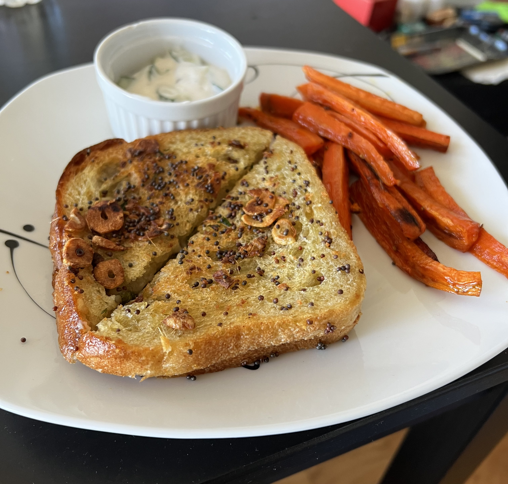

Indian-Style Grilled Cheese

Description
I'm not a big sanwich person. I like a good sandwich but I dont usually spend an hour on a sandwich. This sandwich, however, was well worth the time and effort.
Ingredients
- 2 garlic cloves
- 1 oz fresh ginger
- 1 cucumber
- 4 carrots
- 1/4 oz fresh cilantro
- 1 serrano pepper
- 1/4 cup Plain Unsweetened Vegan Yogurt
- 4 slices sourdough bread
- 2 tbsp mango chutney
- 1 oz vegan mozzarella
- 1 tbsp brown mustard seeds
- 3 tbsp + 2 tsp olive oil
- Salt & Pepper
Steps
- Preheat the oven to 425 degrees. Peel and thinly slice the garlic. Peel and mince the ginger. Dice the cucumber. Peel the carrots and cut into 4 inch long fries. Roughly chop the cilantro leaves and stems. Trim and halve the serrano pepper lengthwise.
- Add the carrot fries and halved serrano pepper to a baking sheet and toss with 2 tsp olive oil, salt, and pepper. Roast the serrano pepper until lightly browned and blistered, about 10 to 12 minutes. Roast the carrot fries until crispy and browned in places, about 15 to 18 minutes.
- Add the diced cucumber, Cashewgurt, and a pinch of salt and pepper to a large bowl. Toss to evenly coat the cucumbers.
- Once the serrano pepper is lightly browned, remove it from the oven and roughly chop. Lay the sourdough bread out on a cutting board. Spread the mango chutney on one side of each slice. Top with chopped cilantro, serrano pepper, and mozzarella cheese. Gently close the sandwiches.
- Place a large nonstick skillet over medium-high heat with 3 tbsp olive oil. Once the oil is hot, add the sliced garlic, minced ginger, and brown mustard seeds. Cook until fragrant, about 1 minute. Add the sandwiches and cook, occasionally pressing down with the back of a spatula, until golden brown and the cheese has melted, about 4 to 5 minutes per side.
- Cut the sandwiches in half. Divide the Indian-style grilled cheese between plates. Serve with carrot fries and cucumber yogurt. Enjoy!